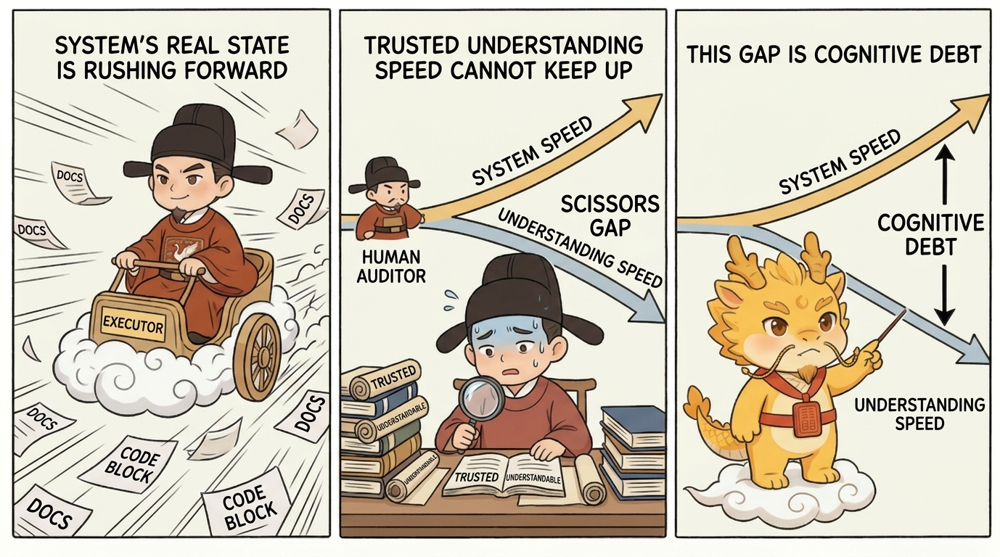

Deep Water
Data Model Constitution And ER Diagrams

Data Model Constitution And ER Diagrams
Table Of Contents
- What This Page Solves
- Shortest Definition
- Why Architecture Is Not Enough
- Where The Data Constitution Lives
- Initializing ER During Old-Project Takeover
- How Detailed The ER Map Should Be
- Ordinary Contracts And Data-Model Amendment Contracts
- Migration, Backfill, And Source Truth
- One-Line Conclusion
- Related Pages
What This Page Solves
The architecture constitution constrains module boundaries, dependency direction, and runtime flows. It does not fully answer a different question:
Which durable entities exist, how are they related, and which facts are source truth instead of derived, cached, projected, or generated data?
Without an ER/data-model layer, ordinary implementation can quietly change:
- primary keys, foreign-key-like references, unique constraints, or status meaning
- entity relationships and cardinality
- source data versus derived data boundaries
- migration, backfill, and compatibility behavior
- persistence semantics behind APIs, ORMs, schemas, or runtime files
Those changes may look like implementation details, but they change business facts. They deserve constitutional seriousness.
Shortest Definition
The architecture constitution governs system boundaries. The data-model constitution governs durable facts.
ER can change, but it should route through data-model-amend, not through an ordinary implementation contract.
Ordinary contracts should declare:
affected_data_entitiesunchanged_data_entitiesdata_model_deltarequires_er_amendmentmigration_requiredbackfill_required
These are not ceremonial fields. They make planning and execution admit that data change creates cognitive debt and migration debt immediately.
Why Architecture Is Not Enough
An architecture map tells an agent:
- which modules own which responsibilities
- which files belong where
- whether dependency direction is healthy
- which interfaces should not change casually
An ER map tells an agent:
- whether entities such as
User,Order,Contract, orEvidencetruly exist - whether one entity owns or references another
- whether a relationship is one-to-one, one-to-many, or many-to-many
- what deletion, archival, folding, or renaming does to history
- which fields are source facts and which are projections
Architecture maps reduce "where is the code?" debt. ER maps reduce "what are the business facts?" debt.
Where The Data Constitution Lives
Recommended location:
dev_repo/architecture/data-model/
|-- README.md
|-- ER.md
|-- er.mmd
|-- entities.json
|-- relationships.json
|-- invariants.md
`-- migrations.mdThe files have different jobs:
ER.md: human-readable entity and relationship explanation.er.mmd: Mermaid ER diagram for quick visual reference.entities.json: machine-readable entity catalogue.relationships.json: machine-readable relationship catalogue.invariants.md: data-model red lines for ordinary contracts.migrations.md: migration, backfill, and compatibility expectations.
Initializing ER During Old-Project Takeover
During old-project takeover, do not assume the data model is already understood.
Minimum census order:
- Find real sources: schemas, ORMs, migrations, fixtures, API contracts, runtime files, import/export formats.
- Extract core entities: durable facts only, not every DTO, temporary object, or frontend view-model.
- Extract relationships: cardinality, reference fields, deletion or archival semantics.
- Extract identity and state: primary keys, unique constraints, foreign-key-like references, enums, and state-machine fields.
- Separate source and derived data: source, derived, cache, projection, and generated data should not blur together.
- Mark confidence:
confirmed,inferred, orunknown.
If no schema or migration exists, write unknown or inferred. Do not turn guesses into confirmed facts.
How Detailed The ER Map Should Be
The useful standard is:
Detailed enough for an agent to decide whether a data change needs amendment, migration, compatibility work, or backfill; not so detailed that every DTO and temporary field enters the map.
Every entity should answer:
entity_id:
purpose:
owning_architecture_node:
source_or_derived:
source_artifacts:
identity:
state_fields:
derived_from:
migration_notes:
requires_amendment_when:
confidence:Every relationship should answer:
relationship_id:
from_entity:
to_entity:
cardinality:
reference_fields:
deletion_semantics:
requires_amendment_when:
confidence:That is more useful than a plain table list and lighter than a complete field encyclopedia.
Ordinary Contracts And Data-Model Amendment Contracts
An ordinary contract works under the existing ER/data-model constitution.
Example:
affected_data_entities:
- contract
unchanged_data_entities:
- campaign
- evidence_item
data_model_delta: none
requires_er_amendment: false
migration_required: false
backfill_required: falseA data-model amendment is required when work changes:
- entity existence, name, ownership, or identity
- relationship direction, cardinality, or deletion semantics
- primary keys, foreign-key-like references, unique constraints, status fields, enums, or state-machine meaning
- source data versus derived/cache/projection status
- migration, backfill, or compatibility behavior
- API, ORM, schema, or runtime persistence semantics
The amendment contract must state what changes, what stays unchanged, why the current model is insufficient, how migration/backfill works, and how compatibility is proven.
Migration, Backfill, And Source Truth
Data models create hidden debt when code changes but old facts remain unclear.
Contracts should explicitly state:
migration_required: whether existing data shape must be converted.backfill_required: whether existing records need new fields, indexes, or regenerated derived values.compatibility_expectations: whether old files, records, or API payloads remain readable.source_or_derived: whether the entity or field is source truth or derived output.
If source and derived artifacts disagree, repair the source first, then update the projection. Generated output should not rule the facts.
One-Line Conclusion
The architecture constitution tells agents how the system stands. The data-model constitution tells agents how facts connect.
Together, they turn "I roughly know how to change this" into "I know what can change normally, what needs amendment, and how old facts remain true afterward."